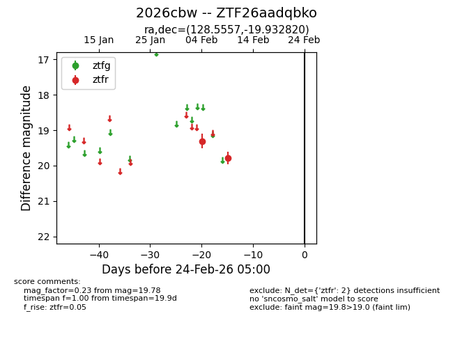
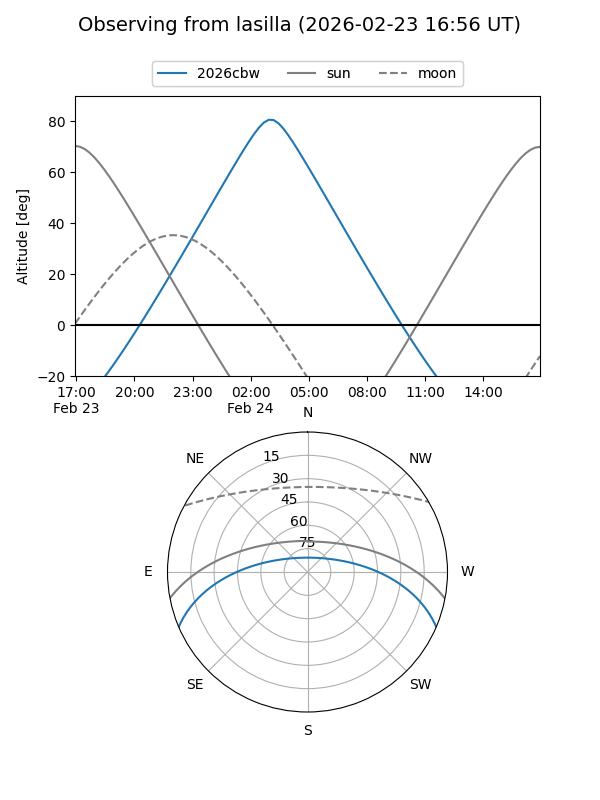
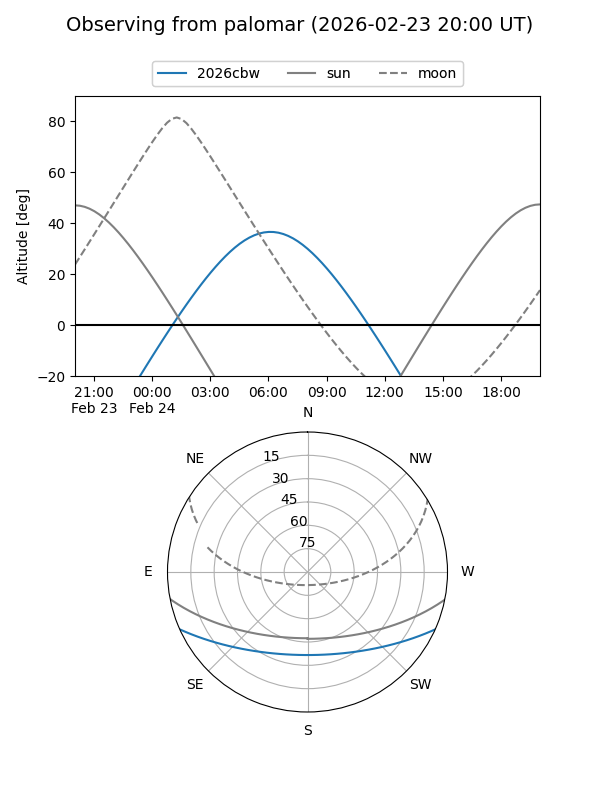

2026cbw
Target 2026cbw at 2026-02-24 09:08
Aliases and brokers:
FINK: link
Lasair: link
ALeRCE: link
TNS: link
YSE: link
alt names
ZTF26aadqbko (ztf,fink_ztf)
2026cbw (tns,yse)
Coordinates:
equatorial (ra, dec) = 128.5557,-19.93282
equatorial (HMS+DMS) = 08:34:13.37,-19:55:58.15
galactic (l, b) = (242.9419,+11.96577)
Flags:
Photometry:
last ztfr=19.78
2 ztfr detections
Lightcurve

Visibility


Additional plots